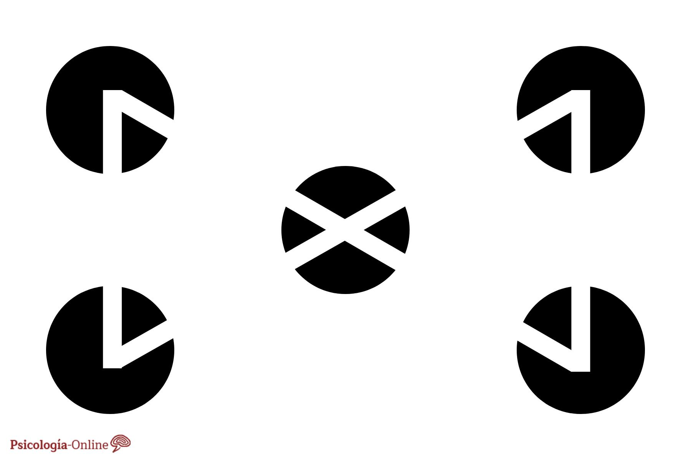
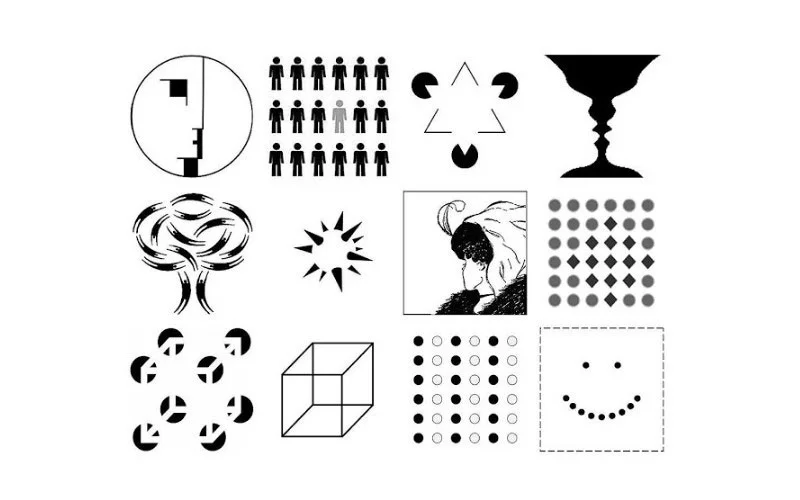

Existen tres campos de la percepción: el campo físico, que es el estímulo recibido mediante los sentidos; el campo fisiológico, que consiste en la excitación nerviosa de la corteza; y el campo psicológico que equivale a la asimilación y procesamiento del mensaje, el cual se convierte en un nuevo conocimiento.

Ley de la Memoria
La Ley de la Memoria es uno de los mejores ejemplos de leyes de Gestalt. Establece que una vez que las formas son percibidas se archivan, hasta que las evocamos por alguna situación particular. No todas las formas que guardamos en la memoria han pasado por un proceso consciente, ya que los órganos y el cerebro procesan información permanentemente sin que nos demos cuenta. Suele suceder que, debido a cualquier otro estímulo, a veces se nos presenten imágenes que no sabíamos que estaban allí.

Ley de la Simplicidad
La Ley de Simplicidad en Gestalt es conocida también como la Ley de la Buena Forma y hace referencia a que el proceso de la percepción es más ordenado si las formas son simples, por lo que el cerebro las prefiere. A continuación se presenta una imagen que es ícono de esta ley, la cual corresponde al logotipo de la marca Apple.